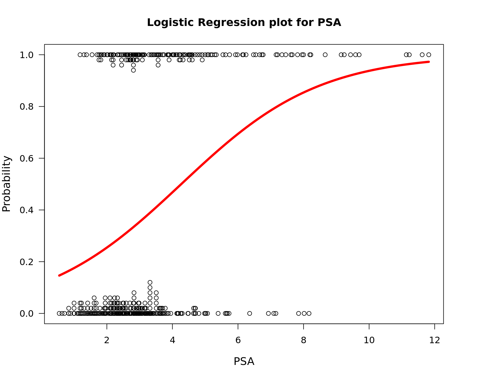
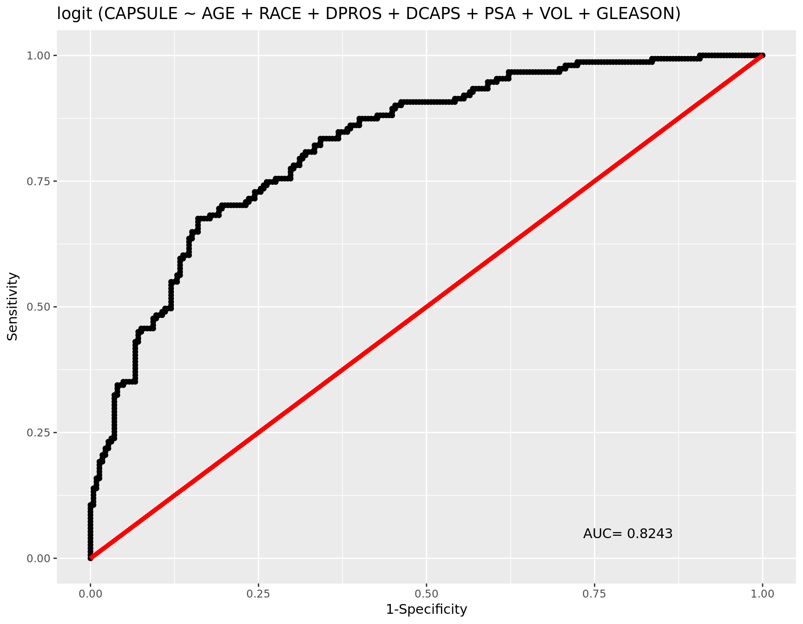

Data Background
NAME: Prostate Cancer Study (PCS.DATA) SIZE: 380 observations, 9 variables
SOURCE: Hosmer and Lemeshow (2000) Applied Logistic Regression: Second Edition. These data are copyrighted by John Wiley & Sons Inc. and must be acknowledged and used accordingly.
Variables * Identification Code: 1 - 380 * Tumor Penetration of Prostatic Capsule: 0 = No Penetration, 1 = Penetration * Age: Years * Race: 1= White, 2 = Black * Results of the Digital Rectal Exam: 1 = No Nodule, 2 = Unilobar Nodule (Left), 3 = Unilobar Nodule (Right), 4 = Bilobar Nodule * Detection of Capsular Involvement in Rectal Exam: 1 = No, 2 = Yes * Prostatic Specific Antigen Value: mg/ml * Tumor Volume Obtained from Ultrasound: cm3 * Total Gleason Score: 0 - 10
library(popbio)
library(Deducer)
dta = read.csv("Statistics/Categorical/data/pros.csv")
head(dta) ID CAPSULE AGE RACE DPROS DCAPS PSA VOL GLEASON
1 1 0 65 1 2 1 1.4 0.0 6
2 2 0 72 1 3 2 6.7 0.0 7
3 3 0 70 1 1 2 4.9 0.0 6
4 4 0 76 2 2 1 51.2 20.0 7
5 5 0 69 1 1 1 12.3 55.9 6
6 6 1 71 1 3 2 3.3 0.0 8mdl = glm(CAPSULE ~ AGE + RACE + DPROS + DCAPS + PSA + VOL + GLEASON,
family = binomial(), data = dta)
summary(mdl)
Call:
glm(formula = CAPSULE ~ AGE + RACE + DPROS + DCAPS + PSA + VOL +
GLEASON, family = binomial(), data = dta)
Deviance Residuals:
Min 1Q Median 3Q Max
-2.4058 -0.7772 -0.4416 0.9019 2.3771
Coefficients:
Estimate Std. Error z value Pr(>|z|)
(Intercept) -6.915650 1.728754 -4.000 6.32e-05 ***
AGE -0.015825 0.019517 -0.811 0.41745
RACE -0.695258 0.476106 -1.460 0.14421
DPROS 0.551597 0.136545 4.040 5.35e-05 ***
DCAPS 0.479916 0.463728 1.035 0.30071
PSA 0.027196 0.009922 2.741 0.00613 **
VOL -0.010840 0.007753 -1.398 0.16204
GLEASON 0.972442 0.167259 5.814 6.10e-09 ***
---
Signif. codes: 0 '***' 0.001 '**' 0.01 '*' 0.05 '.' 0.1 ' ' 1
(Dispersion parameter for binomial family taken to be 1)
Null deviance: 506.59 on 375 degrees of freedom
Residual deviance: 377.31 on 368 degrees of freedom
(4 observations deleted due to missingness)
AIC: 393.31
Number of Fisher Scoring iterations: 5logi.hist.plot(sqrt(dta$PSA), dta$CAPSULE, logi.mod = 1, boxp = FALSE, notch = FALSE,
main = "Logistic Regression plot for PSA",
xlab = "PSA")
rocplot(mdl)